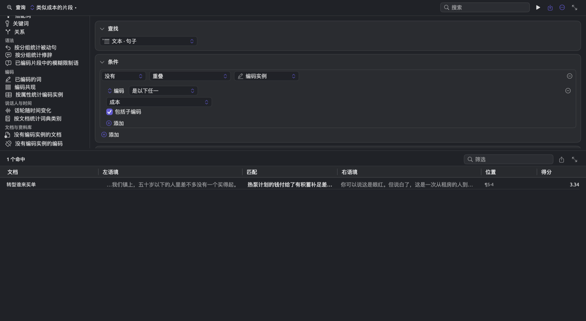

查询模式与发现
研究中提出的问题，往往关乎词的组合，而不只是单个的词。例如，你可能想了解行动派怎样谈论政策和期限。用涉及几个词的模式，你可以搜索“定得更远”“降低能源账单”或“对河谷地区和中部平原蓄水设施的投资”这样的结构。这三个结构中，没有哪一个词能单独表达你要找的意思。
当你关心的是结构本身，而不是结构中的某个词时，按模式搜索最有用。例如，搜索“账单”会返回项目中“账单”的每一次出现，不论上下文如何。搜索以“账单”为宾语的动词，返回的只是项目中有人对账单做了些什么的地方，例如降低账单、看懂账单，而且能让你确切看到作者用了哪些动词。构建模式所用的词不必固定；每个词都可以放宽到任何形容词，或者某个动词的任何形式，这样的灵活模式能收集到研究者逐一搜索时容易漏掉的许多变体。除了搜索与特定概念相关的结构，按模式搜索还能捕捉文体现象，例如长名词短语，它通常是密集、正式文风的标志。
从所选内容查询把阅读器中选中的词变成一个模式，你可以再一个词一个词地放宽它。类似某编码的片段在文档中搜索与某个编码的编码片段相似、自身却没有带上这个编码的句子。这两项功能，以及为常见问题准备的现成查询（即模板），本章后文都会介绍。
适用于所有查询的基础知识，详见第 15 章“构建查询”。查询结果的阅读和导出，见第 16 章“查询结果与统计”。下面的示例来自“气候辩论”，即本指南随附的示例项目。用文件 ▸ 导入 ▸ 示例项目导入这个项目后，每个模式都能立即使用，因为它的文档已经建立了索引。
模式查询
模式查询找的是模式匹配，即同一个句子中符合你所给描述的一段文本。模式有三种，即序列、依存和短语。
- 序列按位置和顺序描述词，例如一个“得”，后面跟至多两个副词，再跟一个形容词。
- 依存按词在语法上的联系描述词，不管它们在句中的位置，例如动词与它的宾语，或者名词与描述它的形容词。
- 短语根据句子的短语结构描述完整的短语，例如任何六个词及以上的名词短语。
选择序列模式还是另外两种，取决于你的结构是否依靠词与词之间的位置关系。如果结构很短，各个词按固定顺序紧挨在一起，序列模式最合适。如果这些词不一定相邻，或者你要问的正是它们之间的语法关系，依存模式更合适。短语模式用来回答关于短语类型和大小的问题，而不是关于某些具体词的问题。
模式查询利用每个文档已经完成的语法分析，所以只作用于已经建立索引的文档。范围中并非所有文档都已建立索引时，命中数旁边会出现一个计数，例如12 / 14，表示查询实际处理了多少个文档。关于索引，详见第 21 章“分析与索引”。
在模式查询得到的列表中，匹配栏显示匹配到的词，两侧是左语境和右语境。条件中的规则作用于整个匹配。这些规则可以检查匹配的文本或长度，它所在的句子、段落或文档，以及上下文，例如是否位于某个编码实例之内（位于其中）。
显示提供除关键词以外的所有结果类型。显示设为列表的模式查询可以存储为透镜，在你阅读和编码时于阅读器中标注它的匹配；也可以变成分析器。详见第 18 章“使用查询结果”。
开始一个模式查询
凡是能构建查询的地方，都能构建模式。文档的查询只作用于这一个文档，因此很适合用来试着构建模式。在文档集或项目标签页的查询视图中，条件位于已存储查询和模板的旁边；结果占据条件下方的区域，并随着你修改模式而更新。在较大的文档集或项目中，结果要等你运行查询才会出现。点按顶部横栏中的运行查询按钮（三角形图标），或者按下 ⌘R，即可运行。
要开始一个模式查询：
- 打开一个查询。单个文档请点按检查器中的多重模式，再点按查询。文档集请点按其标签页顶部那排按钮中的查询，或者选取窗口 ▸ 查询，并在其中选择范围。
- 在查找条件的菜单中选择文本 · 模式匹配。查找下方会出现一个模式条件，其中是由 A、B 两个空白词组成的序列。
- 在模式条件中选择序列、依存或短语。
序列模式
序列模式是一串从左往右读的步骤。每个步骤连续取若干个词，也可以一个都不取。词步骤对它所取的词有规则，并对应一个字母（A、B、C，依此类推）。另一种步骤没有规则，称为间隔，用省略号（…）表示；间隔代表夹在你关心的词之间的任意一个或几个词。
步骤显示为模式条件中带边框的方框，每个方框代表一个步骤。方框的第一行显示字母或省略号，后面是两个步进器（用至连起来）和一个移除按钮（只剩一个步骤时已停用）。如果是词步骤，它的规则位于第一行下方。为步骤添加规则的添加菜单，与条件中的添加菜单相同。所有步骤下方是添加词和添加间隔按钮。
构建序列
“气候辩论”中的行动派谈到政策和期限时，常用“得”引出一个形容词，如“把政策设计得公平”。有时两者之间还夹着一个副词，如“每一个新期限都比上一个定得更远”。下图展示的是“行动派”文档集中的这个序列。步骤 A 的规则是词元 是 得，所以它匹配任何一个“得”。步骤 B 的规则是词类 是以下任一 ADV · 副词，并设为 0 至 2，也就是这一类词可以出现 0 次、1 次或 2 次。步骤 C 的规则是标记 是以下任一 VA · 谓词性形容词；语法分析常把作谓语的形容词（例如“公平”和“远”）归入词类 VERB，标记为 VA，所以步骤 C 用标记而不用词类。
结果中有“来自气候罢课的信”中的“得更远”，也有“时间不多了”中的“得公平”。在“时间不多了”的这个结果中，步骤 B 一个词也没有取，这正是 0 至 2 所允许的。
要构建序列：
- 在查找条件中选择文本 · 模式匹配，模式条件保持为序列。
- 在每个词步骤下选取添加 ▸ 添加规则，在字段菜单中选择一个字段，例如词元或词类，然后为它设定一个值。
- 把每个步骤的步进器设为它可以取的词数（见下文重复与间隔）。
- 每多一个词，点按一次添加词；在中间可能夹着别的词的地方，点按添加间隔。
一个步骤有多条规则时，规则上方会出现全部、任一和无三个选项，与条件中一样。缺少值的规则，例如什么都没输入的词元规则，会显示一圈边框，在填写完整之前不起作用。因此，如果一个步骤唯一的规则还没有填完，这个步骤会匹配任何词和标点符号。
分析你自己的文本时，不妨从观察到的某个语法结构入手，每个词只描述到你的问题所需的程度。词元让步骤只取某一个词（任何形式都可以），词类则让指定类别中的任何词都能匹配。本章后文介绍的从所选内容查询，可以根据你在阅读器中选中的例子构建这样的序列。
重复与间隔
步骤上的两个数值，表示匹配时它连续取的词数的最小值和最大值。新的词步骤预设为 1 至 1；把词步骤改为 0 至 1，这个词就变为可选的。
步骤所取的每个词都必须符合该步骤的规则。设为 1 至 3、规则为词类 是以下任一 NOUN 的步骤，会把“时间不多了”中的“住宅保温计划”当作由三个连续名词组成的一段来匹配。任何步骤最多只能取 32 个连续的词；此外，步骤的第二个数值必须大于或等于第一个，而且不能小于 1。
添加间隔会添加一个设为 0 至 3、不带任何规则的新步骤，它可以先取至多三个任意的连续词，再往下匹配。新步骤总是加在最后；要在 A 和 B 之间插入一个间隔，需要先移除步骤 B，点按添加间隔，再点按添加词，这样就重新得到一个步骤 B。
如果步骤 A 设为词元 是 公布，后面跟一个间隔，最后步骤 B 设为词元 是 规划，这个模式就能找到“一位市长的承诺”中的“公布云雀港的气候规划”。注意，这里的间隔取了三个连续的词，即“云雀港”、助词“的”（语法分析把它算作单独的一个词）和“气候”。要把“公布云雀港的新气候规划”这样的说法也找出来，还需要把间隔的上限改为 4。
一般建议尽量把间隔放在词步骤之间，而不要放在模式的最前面或最后面。匹配是贪婪的，即尽可能取最长的一段（见下文序列的匹配方式）。因此，放在模式末尾的间隔会在每个匹配后面多加一段至多三个词的文本，放在开头的间隔则在匹配前面多加同样的一段。
序列的匹配方式
LemmaLoom 单独分析每个句子，从句子的第一个词开始，一个词一个词地往后。
- 逗号、句号和其他标点符号也算作词。
- 没有规则的步骤（包括间隔）可以取任何词或标点符号。如果只想跳过词而不跳过标点，请用添加词而不是添加间隔，给这个步骤加上规则是词 为真，并把它设为 0 至 3。
- LemmaLoom 沿着句子逐个位置尝试，寻找符合整个模式的最长一段词或标点。找到了，就得到一个匹配，然后从这个匹配的最后一个词或标点之后，继续分析句子的其余部分。
- 在匹配到的这一段中，每个步骤在后面的步骤仍能符合的前提下，取尽可能多的词或标点。
以“时间不多了”中的一句为例：“常常也正是这些人告诉我们，行动得太快代价太高”。LemmaLoom 从“常常”开始逐个位置尝试，到了“得”，步骤 A 才符合。步骤 B 取副词“太”，步骤 C 取谓词性形容词“快”，所以匹配到的一段是“得太快”。“得”也可以表示“必须”，这时它的词元同样是“得”。“农民不是敌人”中有一句“那么国家就得一起分担这笔账”，步骤 A 在这个“得”上也符合。步骤 B 可以一个词也不取，也可以取副词“一起”，但步骤 C 需要一个标记为 VA 的词，而“一起”是副词，“分担”是动词，所以从这个“得”开始找不到匹配。如果原文写的是“行动得实在太快”，步骤 B 就会取“实在”和“太”两个副词。
字母
词步骤只要存在，就一直保持它的字母。每添加一个词步骤，它就得到第一个尚未使用的字母。如果移除了 B，又添加一个词步骤，新步骤会再次成为 B。
除了记录模式匹配，LemmaLoom 还记录每个字母实际覆盖了哪些词。在前面那个句子中，A 覆盖“得”，B 覆盖“太”，C 覆盖“快”。而在“得公平”中，B 没有覆盖任何词。
模式中用到的字母会显示在查询文本条件中，上面的例子写作 查找 模式匹配 A:[词元 是 "得"] B:[词类 是以下任一 ADV]{0,2} C:[标记 是以下任一 VA]。注意其中的花括号：步骤的数值范围不是 1 至 1 时，就写在花括号里。
计数也可以按某个字母所覆盖的词来分组。以关系模板为例，它可以按词 · B · 词元计数，也就是字母 B 所覆盖的那个词的词元（见本章后文模板）。如果 B 在一次匹配中覆盖了几个词（例如模式步骤的范围是 1 至 3），只取其中第一个词。字段菜单只提供整个匹配的字段，所以要让你自己的模式按单个字母计数，需要以关系模板为基础来修改；如果要用序列，就在模式条件中选择序列，计数标准保持不变（仍然是词 · B · 词元）。
依存模式
LemmaLoom 为句子建立索引时，会把每个词与它所依附的词联系起来，后者称为它的中心词。形容词依附于所修饰的名词，主语和宾语依附于所属的动词。每个句子中有一个词（通常是主要动词）不依附于任何词，它是根词。把词与词之间的所有依存关系都算进来，就形成一个树形结构，根词位于顶端。语法检查器中的结构分面会以图形显示这棵树（见第 11 章“语法检查器”）。
依存模式描述这个树形结构的一部分，由至多六个词（每个词有自己的规则）以及它们之间的依存关系构成。由依存联系相连的词，在句中不必紧挨着。例如，一个“动词以‘账单’为宾语”的依存模式能找到“降低能源账单”“看懂自己的能源账单”和“加进账单”。允许间隔的序列模式也能找到这些，但它还会找到“赌的是账单”，而这里的“账单”并不是“赌”的宾语。
每个词显示为模式条件中一个带边框的方框，用字母标示。除了一个词以外，每个词都带有以下三个控件：
- 中心词菜单，显示它所依附的那个词的字母；
- 关系菜单，一开始显示任意关系；
- 任意深度复选框。
没有这些控件的那个词称为锚点词。在新模式中，锚点词一开始是 A。锚点是依存搜索的起点，并且始终保留在模式中。此外，依存模式中的所有词都必须直接或经由中间的词连回锚点。
构建依存模式
下图是一个模式，用来找出行动派所用的、以“账单”为宾语的动词。作为锚点的词 A 带有规则词类 是以下任一 VERB · 动词。词 B 通过宾语关系依附于词 A，带有规则词元 是 账单。条件底部的命中菜单保持为匹配的词。
匹配中有“时间不多了”中的“降低能源账单”，也有“希望要靠行动”中的“看懂自己的能源账单”。同样的结构适用于你文档中的任何动词和宾语。像这个例子一样固定 B 中的名词，可以考察这个名词常与哪些动词连用；固定 A 中的动词，则可以考察它带有哪些宾语。
要构建依存模式：
- 在查找条件中选择文本 · 模式匹配，并在模式条件中选择依存。条件一开始有两个词，即锚点 A 和依附于 A 的词 B。
- 在每个词下面添加它必须符合的规则，方法与序列相同。
- 为锚点以外的每个词，在中心词菜单中选择它的中心词，在关系菜单中选择一种关系（见下文关系）。
- 每多一个词，点按一次添加词，总共至多六个词。
- 在条件底部的命中菜单中，选择每个匹配覆盖句子中多大的范围（见下文锚点与匹配的范围）。
添加词会添加一个新词，它的中心词是列表中的最后一个词，关系为任意关系。你可以在它的中心词菜单中另选中心词。模式有了六个词以后，添加词就会消失。
关系
关系菜单用来描述一个词与它的中心词之间是什么关系。菜单最上面的任意关系接受词与词之间的任何联系。
接下来是语法功能，即主语、宾语、表语、补语、定语、状语、同位语、施事、并列项、连接词和主句。除主句外，语法功能透镜为文档着色时用的就是这些功能（见第 6 章“透镜”）。每一项功能说明某个词为它的中心词承担什么作用。如果 B 通过宾语依附于 A，那么 B 就是 A 的宾语。在英语中，宾语既包括动词的宾语，也包括介词的宾语；因此在 on a podium 中，podium 是 on 的宾语。
最后是一组词汇速写关系（见第 12 章“词汇速写”）。在模式中，这些关系（主语、宾语、补语、形容词修饰语、副词修饰语、构成复合词和并列于）与词汇速写中的关系相同；其中前三项与上面的功能同名，但它们是另外的条目。它们和上面的语法功能一样从中心词一侧来读，但按词汇速写的惯例归并联系。这一组的宾语只包括直接宾语和间接宾语，不包括介词的宾语；这一组的补语涵盖补语和表语，所以既包括“我希望大家都能抽空读一读”中的“读”，也包括英语 He was busy 中的 busy。并列于等同于并列项。
作主语于、作宾语于、修饰和作补语于是反向表达联系的，即从下层的词往上看。介词短语通过一个介词把两个词连起来。
三种语言中，联系的名称各不相同，LemmaLoom 把它们对应到上面描述的关系上，所以同一个模式可以用于英语、德语或中文文档。不过，各语言的分析仍有差异，介词的宾语就是一例。在德语中，auf einem Podium 中的 Podium 包含在介词短语中，LemmaLoom 把它算作定语；而在中文中，介词挂在它的名词下面，算作连接词，例如“时间不多了”中“这些日期在讲台上念出来”里的“在”依附于“讲台”。在跨语言比较计数之前，请先在每种语言中查看几个匹配。
任意深度
不勾选任意深度时，一个词必须直接依附于它的中心词。勾选任意深度后，这个词可以经由别的词间接依附于中心词，作为它的子节点、孙节点或更下层的节点。勾选任意深度后，关系菜单就不再起作用。如果你在意的是两个词同属一个结构，而不在意它们在语法上究竟怎样相连，就勾选任意深度。
“时间不多了”中有这样一句：“如果我们想保护孩子们将要继承的气候，这个十年就是动手的时候”。这里的“气候”依附于“保护”，而不是直接依附于“想”。如果查询的模式中 A 为词元 是 想，B 为词元 是 气候，只有为 B 勾选了任意深度，才能找到这个片段。
锚点与匹配的范围
所有符合锚点规则的词都被视为锚点。LemmaLoom 接着寻找能填入模式中其余每个位置的词。模式要求每个位置都由句中一个不同的词来填。因此，即使有不止一个词符合，每个锚点词也只能提供一个匹配。统计匹配数，也就是统计锚点的个数。
条件底部的命中菜单决定每个匹配的范围：
- 匹配的词包括从匹配的第一个词到最后一个词的所有词，中间的词也包括在内。例如，在 A 为“想”、B 为“气候”的模式 A → B 中，匹配是“想保护孩子们将要继承的气候”。
- 整棵子树的匹配包括以锚点为根的整棵子树，也就是匹配到的锚点以及依附于它的所有词。在“时间不多了”的这个句子中，就是“如果我们想保护孩子们将要继承的气候”，即以“想”为中心的小句。
需要上下文时，例如在为查询的某个匹配编码之前，请使用整棵子树。
短语模式
除了分析词与词之间的联系，语法分析还把每个句子分解成层层嵌套的短语。在“2024 热浪报告”中，“对河谷地区和中部平原蓄水设施的投资”是一个名词短语。它里面有介词短语“对河谷地区和中部平原蓄水设施”，介词短语中又有名词短语“河谷地区和中部平原蓄水设施”，后者还套着两个较短的名词短语“河谷地区和中部平原”和“蓄水设施”。短语模式按形式和跨度长度来查找短语。它适合提出与措辞有关的文体问题，而不是关于某个短语意义或内容的问题；例如，如果你想知道作者在一个名词短语中塞进了多少细节，就可以用短语模式来考察。
短语模式的模式条件包括：
- 形式按钮列出通用的短语形式，可以勾选名词短语、介词短语、形容词短语、副词短语、动词短语和小句。无论分析涉及哪些语言，它们的含义都相同。
- 短语标签按钮显示按所搜索语言给短语分配的具体标签。可用的标签视你的文档而定，例如中文文档的 IP · 小句 和 DNP · 的字短语。如果文档使用多种语言，标签后面会注明语言的名称。
- 至少 … 个词步进器设定短语至少要有多少个词，从 1 到 50。短语中的标点符号也计入跨度长度。
- 仅最外层会去掉嵌在当前模式所找到的其他短语之内的短语。例如，较长的名词短语“对河谷地区和中部平原蓄水设施的投资”包含较短的名词短语“河谷地区和中部平原蓄水设施”，所以勾选仅最外层后，结果列表中只留下前者。
- 包括名词块会找出名词块，即以中心词结尾的简短名词短语，如“全国农作物损失”或“高温预警”。名词块符合 NP · 名词短语。
每个按钮上显示当前勾选的项。什么都不勾选时，按钮显示无，表示所有短语都符合条件。在同一个列表中勾选几项，表示接受其中任何一项。两个列表都有勾选项时，短语必须同时符合两个列表中的选项。在同一组词上找到两次的短语，例如与某个名词短语完全重合的名词块，只列出一次。
下图是在检查器中为“2024 热浪报告”构建的短语模式。它使用名词短语这一形式，至少 … 个词设为 6，并勾选了仅最外层。列表把报告中的每个长名词短语按最宽的范围列出一次。
要按形式和长度查找短语：
- 在查找条件中选择文本 · 模式匹配，并在模式条件中选择短语。
- 点按形式按钮，在打开的列表中勾选一种或几种形式；也可以在短语标签下勾选具体标签。点按列表以外的地方即可关闭列表。
- 用至少 … 个词步进器设定最短长度。
- 勾选仅最外层，只列出嵌套短语中最宽的那个；勾选包括名词块，把简短的名词短语也算进来。
查找中的语法 · 短语单元可以找出这些短语的每一次出现，并提供针对短语标签、形式、宽度、短语功能和短语中心词的规则（见第 15 章“构建查询”中的选择要查找的内容）。如果你关心的是短语在句子中的作用或它的中心词，请选择这种搜索；只有短语模式有仅最外层，也只有它能加入名词块。
从所选内容查询
编辑 ▸ 从所选内容查询根据阅读器中选中的词构建一个序列模式。借助这项功能，你可以从阅读时觉得有意思的一个句子出发，找到结构相似的其他句子。它在各个条件上方显示一个阶梯，每个词占一列，从最上面的确切词形一直往下，到最下面的任意词。点按较低的一级，就放宽了对这个词的描述，查询每次都会随之更新，给出新的结果。
从所选内容生成查询
- 在阅读器中选中同一个句子内的至多十二个词。标点符号也计入这十二个。
- 选取编辑 ▸ 从所选内容查询。没有选中任何内容时，以及你正在编辑文档文本时，这个菜单项已停用。
检查器会打开多重模式 ▸ 查询。你先前的查询会被一个名为新建查询的未存储新查询取代，新查询的结果随即显示。如果你正在修改先前的查询，请务必在选取这个命令之前把它存储起来。
阶梯的列数与选中的词数相同，每列以它的字母为标题。每列从上到下依次提供：
- 词“气候”，对应这个词形；
- 词元“气候”，对应这个词的所有形式（中文的词没有词形变化，所以这一级通常与上一级相同；英语则不然，例如 activists 的词元是 activist）；
- 标记 NN，对应具体词性标记相同的所有词，前提是语法分析给出了这种标记（NN 表示普通名词）；
- 词类 NOUN，对应同一词类的所有词；
- 这个词的语法功能，例如主语（如果已知）；
- 任意词，对应所有的词（只对词提供，标点符号没有这一级）。
前两级不考虑大小写和重音符号。当前选中的那一级会以颜色高亮显示。名词、专有名词、动词、形容词、副词和数词的列从词元开始，其余词的列从词形开始，例如代词、介词和“的”这样的助词。
放宽搜索
“时间不多了”中有一句：“如果一个工业小镇失去了原有的工作岗位，那么新的岗位就必须建在那里，而不是建在三百公里外的某个商务园区”。下图是在这句话中选中“新的岗位”后的阶梯。阶梯有三列，A 列从词元“新”开始，B 列从词“的”开始，C 列从词元“岗位”开始。一开始，查询只返回这篇评论文章中“新的岗位”这一处。像图中那样在 C 列中点按词类 NOUN以后，“新的”后面可以是任何名词，于是“新的许可证”和“新的油气田”也进入了列表。同样，再在 A 列中点按标记 VA，第一个位置就可以是任何标记为 VA 的词，于是又加入了“艰难的家庭”和“不公的转型”。不过，这样也会带来“多的未来”，它出自“一个艰难得多的未来”，这里占据第一个位置的是“得”后面的“多”。
通常，你应该每次只放宽一列，并看看每次改动带来了什么。一旦放宽带进了你不想要的匹配，比如这里的“多的未来”，就应该退回上一级，或者在构建器中打开模式，添加一条规则。
阶梯打开后，你改动显示条件时它仍然可见。要显示各种变体的频次分布，请在显示条件中选择数量，然后点按分组依据。新的一行按文本分组，即每个匹配的词。此后每点按阶梯中的一级，计数都会随之更新。
在构建器中打开按钮会打开模式条件，同时关闭阶梯。你可以在模式条件中修改这个模式，方式与修改你自己构建的模式完全相同。改动显示以外的任何条件也会关闭阶梯。
这个查询只作用于当前打开的文档。要把查询用于整个文档集或项目，请在存储查询对话框的可用范围菜单中选择项目，然后存储查询；这个菜单默认设为文档，即只把查询保留在这个文档中。之后，查询会出现在文档集或项目的查询视图左侧一栏中。关于存储查询，详见第 15 章“构建查询”中的存储查询。
添加上下文
阶梯下方至多有四个复选框，它们可以根据你在文本中选中的内容添加规则。每个复选框只在适用时出现。
- 编码实例在所选内容与编码实例重叠时出现。勾选编码实例会在条件中添加一个上下文，只保留与带有其中某个编码的编码实例重叠的匹配（有 重叠 编码实例，其编码 是以下任一这些编码）。
- 话轮在你从转写稿中某个话轮之内开始选择时出现。勾选话轮后，只保留位于这个说话人话轮之内的匹配（位于其中）。例如，如果所选内容来自“电台辩论”中怀疑论者的某段回答，匹配就会限定在说话人怀疑论者的话轮之内。
- 发现在某个分析器的发现与所选内容重叠时出现，例如元话语分析器找到的一个模糊限制语。勾选发现后，只保留与那里找到的某一类发现位于同一个句子中的匹配（与之同句）。
- 依存在所选内容至多有六个词（包括标点）并且这些词在语法上相互依附时出现，也就是除了一个词以外，每个词都依附于所选内容中的另一个词。
勾选依存会把序列变成一个依存模式，它由所选各词之间的依存关系构成，每条关系的值都是任意关系。中心词位于所选范围之外的那个词成为锚点，所以锚点不一定是 A（在这里，“岗位”所在的 C 列是新的锚点），模式条件底部的命中菜单会自动设为匹配的词。各级仍然限定每个词可以是什么，但这些词现在可以彼此分开。例如，如果各级保持一开始的设置，这个依存模式还能匹配“新的工作岗位”这样的说法，其中“的”和“岗位”之间隔着另一个词。
没有阶梯的情况
如果所选文本包含几个句子、超过 12 个词，或者来自尚未建立索引的文档，从所选内容查询就改做普通的文本搜索。在查询设置中，查找设为文本 · 文本匹配，要查找的文本就是所选文本本身。只要所选内容的两端都落在词的边界上，匹配的就是完整的词。
类似某编码的片段
类似某编码的片段返回一个句子列表，这些句子含有用所选编码编码过的片段中常见的词，自身却没有带上这个编码。类似某编码的片段分析已经带有某个编码的文本片段中的词，并把这些词与文档其余部分中的词作比较。这些片段中典型的词，构成与这个编码相关的特征词表。没有带上所选编码的句子，按其中出现的这些词以及它们在特征词表中的权重来打分。此外，带有其他编码的句子也在打分之列。
类似某编码的片段返回的句子，需要你逐一判断，再决定是否为它们编码。类似某编码的片段不懂反讽，认不出不用惯常词语就把意思表达出来的片段，也分不清用词几乎相同、意思却不同的句子（例如“我们总能负担得起”和“我们永远负担不起”）。
查找类似某编码的片段
类似某编码的片段可以在文档集或项目中运行。它位于查询视图左侧一栏中模板的最后，也可以在查询窗口中找到。它的菜单列出在你所查询的文档中至少有一个编码实例的每个编码。
要查找类似某编码的片段：
- 在文档集标签页顶部那排按钮中点按查询，或者选取窗口 ▸ 查询，再选择一个项目或文档集作为范围。
- 在左侧一栏的模板下，点按类似某编码的片段，然后选择编码。
LemmaLoom 为编码建立特征词表期间，运行按钮旁边会显示一个旋转指示器。在此期间编辑查询，当前的特征词表就会被放弃。
选择编码后，LemmaLoom 会自动生成一个以编码命名的查询并运行它。在“气候辩论”项目中选择成本，得到的查询是类似成本的片段，其设置如下：
- 查找为文本 · 句子。
- 条件使用上下文没有 重叠 编码实例，其编码 是以下任一 成本，并勾选了包括子编码。这样，已经带有这个编码或它的任一子编码的句子就被排除在外。
- 显示为列表，使用显示得分的菜单，限制设为 200。
特征词表按下文所述的标准挑选词。如果只有寥寥几个很短的编码实例，通过的词就太少，旋转指示器会停下；请先用这个编码多编码一些片段。
特征词表是怎样建立的
LemmaLoom 扫描文档集或项目中所有已建立索引的文档，译文不在其内。除标点和停用词外，每个词都参与计数；停用词是非常常见的词，如“的”“了”和“我们”。词按词元计数，不区分大小写和变音符号；没有词元的词按词形计数。一个词如果与所选编码的编码实例重叠，就算作内部，否则算作外部。
对内部出现的每个词，LemmaLoom 衡量它在内部比在外部常见多少。这种衡量为每个词给出两个结果，一是证据有多强，二是这个词在内部常见多少倍；它们分别称为对数似然和对数比。关键词列表用的也是这两个得分（见第 16 章“查询结果与统计”中的两个得分的算法）。
期望频次
成本的编码实例内外的总词数相差很大，所以直接比较绝对频次并不合适。为此，对数似然从期望频次出发，即假如这个词在两边词数中所占的份额相同，它在内部和外部应当各出现多少次。
来看一个虚构的例子，计数都取整数（示例项目要小得多）。成本的编码实例中有 2,000 个计入的词，项目的其余部分有 48,000 个。账在内部出现 12 次，在外部出现 18 次，共 30 次。在 50,000 个词中，成本的编码实例占 2,000 个，也就是说内部占二十五分之一。因此，如果账分布均匀，它的 30 次出现中应有 1.2 次在内部（即二十五分之一），其余 28.8 次在成本的编码实例之外。一般地：
在上面的等式中， 和 分别是这个词在编码实例内部和外部出现的次数； 和 是编码实例内部和外部计入的词的总数； 和 是这个词在两边的期望频次。式中的分数是这个词在全部词中所占的份额。对账来说，，。
对数似然
对数似然统计量（）衡量实际观察到的计数与期望频次相差多少。这里的 2 是名称的一部分。
表示自然对数函数，第 16 章“查询结果与统计”中的关联得分一节解释过它。理解这个公式需要知道对数的三个性质：第一，；第二，大于 1 的数，其对数为正；第三，介于 0 和 1 之间的分数，其对数为负。
每一项都把观察到的频次除以相应的期望频次。两者相等时，商为 1，这一项对 毫无影响。一个词在一边比预期常见，在另一边就一定比预期少见，所以一项为正，另一项为负。正项的绝对值总是大于负项的绝对值，所以 不会是负数；而且观察与期望相差越大， 就越大。计数为 0 的项不计入，因为 0 的对数没有定义。
对账来说，，它的对数约为 2.3026；，它的对数约为 −0.4700（≈ 表示“约等于”）：
由于每个对数都以它的计数加权，同样的差异，观察到的次数多时，在 中的分量就比观察到的次数少时更重。
对数比
对数比衡量差异的大小，按下面的公式计算（公式中的 Log Ratio 即对数比）：
分数的分子是这个词在内部的相对频率，即把它的出现次数加上 0.5 以后，除以内部所有词的总数。同样，分母是外部的相对频率（出现次数同样加上 0.5，再除以外部所有词的总数）。以 2 为底的对数（）表示一个数是 2 的几次方，所以对数比为 1 表示内部的相对频率是外部的两倍，为 2 表示四倍，为 3 表示八倍。加上 0.5，是为了无论这个词是否在两边都出现过，都能算出数值。
例如，账在内部的相对频率是 ，在外部是 。因此，内部的相对频率约为外部的 16.2 倍。因为 ，所以对数比约为 4.02。
哪些词进入特征词表
一个词同时满足以下三个条件，才有资格进入特征词表：
- 它在内部比在外部更常见；
- 它的对数比大于或等于 1，也就是它在内部的相对频率大约是外部的两倍或更高；
- 它在内部至少出现 3 次。
LemmaLoom 确定哪些词符合这些标准以后，按对数似然得分给它们排序。排在前 50 的词构成你的特征词表，并保留各自的对数似然得分，作为它们的权重。符合三项标准并排进前 50 的词，不管对数似然得分多低，都会进入特征词表，只是得分低的词权重微不足道。
| 词 | 内部 | 外部 | 对数似然 | 对数比 | 是否进入特征词表 |
|---|---|---|---|---|---|
| 账 | 12 | 18 | 38.34 | 4.02 | 是 |
| 付 | 9 | 30 | 18.25 | 2.90 | 是 |
| 钱 | 7 | 20 | 15.79 | 3.13 | 是 |
| 气候 | 6 | 140 | 0.00 | 0.15 | 否（对数比小于 1） |
| 赌注 | 2 | 0 | 12.88 | 6.91 | 否（内部少于 3 次） |
气候在成本片段中出现的比率，与它在项目中其他地方几乎相同，所以它说明不了成本方面的任何特别之处。赌注在两项度量上得分都很高，但只出现了两次，太少，靠不住。
句子的打分方式
对每个没有带这个编码的句子，LemmaLoom 收集其中所含的不同特征词。所含特征词少于两个的句子会从列表中去掉（如果特征词表只有一个词，句子含有至少一个就够了）。LemmaLoom 用下面的公式计算排序用的得分：
式中的 Score 即得分； 到 是句中出现的 个特征词的权重（每个词只算一次，不管它出现多少次）； 是句子的总词数，不计标点符号，但计入停用词。一个数的平方根，是自己乘自己等于这个数的那个数，例如 ，因为 。
为了说明这种算法怎样给句子打分，假设特征词表只由账、付和钱三个词构成。“电台辩论”中，活动人士说过一句“这笔账谁来付？”。按分析的切分，这个句子有五个词，其中“账”和“付”两个词是特征词。
再假设另一个句子有二十六个词，三个特征词都在其中，“付”还出现了两次。“付”的权重只算一次。
这个较长的句子虽然含有更多特征词，得分却更低，因为它的权重要除以更大的词数。怀疑论者在同一场辩论中说过“我们付了税，钢厂搬到国外，排放也跟着搬走”，这一句只含一个特征词付，因此不能进入列表。
如果得分完全不做除法，长句只因为容得下更多特征词就会占便宜。如果直接除以长度，结果又会偏向很短的句子。用平方根，长度是四倍的句子需要两倍的权重，才能得到同样的得分。
阅读结果

得分栏显示每个句子的得分。句子按得分从高到低排列。得分取决于内部和外部两者的大小，所以不同列表之间无法比较。列表默认最多包含 200 个句子。要看到更多句子，请调高显示条件中限制旁边的数字；超过 5,000 时，还要调高选项条件中的上限。
通常，你会从列表顶部开始，一批一批地处理句子：
- 连按一行，或者从它的快捷菜单中选取跳转到来源，在文档中打开这个句子。
- 结合上下文阅读它；如果它属于这个编码，就为它编码（见第 7 章“编码”）。
- 处理完一批以后，回到查询并按下 ⌘R。你编码过的句子会从列表中消失。
结果上方横栏中的筛选框，可以按行的文本、语境或文档是否含有你输入的内容来筛选显示的行。在筛选框中输入文档标题的一部分，就可以把结果缩小到一个文档，一次处理一个文档。同一横栏右端带有两个斜向箭头的在窗口中打开结果按钮，可以让列表与文档并排显示。结果窗口保留的是你打开它时的列表；按下 ⌘R 以后，如果想看到更新后的列表，需要重新打开这个窗口。
⌘R 沿用查询原来的特征词表。如果想把最新的编码决定纳入特征词表，可以再次选择类似某编码的片段和这个编码。要保留特征词表，需要存储查询（见第 15 章“构建查询”中的存储查询）。
得分只在处理带冻结列表的查询时才会出现在显示文档顺序的菜单中（见第 15 章“构建查询”中的冻结列表）。冻结列表可以来自通过类似某编码的片段创建的查询，也可以来自冻结值命令。两种情况下的打分过程相同。使用冻结值时，每个词的权重是它被冻结时的得分：关键词列表中的权重是对数似然，搭配词列表中的权重是关联得分。
按得分排序时，每个片段至少要含有列表中两个不同的词；而以词为单位时，每个结果只含一个词，所以按得分排序之前，需要把查找设为包含多个词的单位，例如文本 · 句子或文本 · 段落。例如，在“怀疑派”文档集中，把查找设为文本 · 句子，再把第 18 章“使用查询结果”中冻结值一节里的查询“关键词：行动派”按得分排序。怀疑派的句子中，行动派关键词最密集的那些会排在最前面。
创建透镜或分析器，以及使用自动编码…，都需要把显示得分的菜单设为其他选项（见第 18 章“使用查询结果”中的哪些查询可以成为透镜）。
模板
模板是为你可能想问的常见问题预先准备好的查询，例如索引行、词表或编码的共现。学习构建查询时，模板可以作为起点；在自己构建查询之前，也可以用它很快了解材料的概貌。你可以随意把模板中的条件改得更符合需要，再以新名称存储改动后的查询。
模板列表提供文档集或项目可用的查询模板，它位于查询视图和查询窗口左侧一栏中已存储的查询下方。顶部横栏中的搜索框可以按名称找到模板或已存储的查询。对于文档的查询，也可以在检查器顶部横栏的模板菜单（魔杖图标）中找到模板。两处都把模板分为词语、语法、编码、说话人与时间和文档与资料库几类，并根据所在位置只显示适用的模板。在文档集和项目中，左侧一栏的最后还有一个类似某编码的片段（见本章前文类似某编码的片段）。
选择模板后，一个以模板命名的未存储新查询会取代当前的查询并开始运行。如果旧查询有未存储的更改，请按 ⌘Z 把它恢复。
在下表的中间一栏中，分号前面的内容在查找和条件中设置，分号后面的内容在显示中设置。
| 模板 | 它设置的查询 | 可用位置 |
|---|---|---|
| 索引行 | 词，其词元 是你输入的值；列表 | 所有位置 |
| 词表 | 词，是词 为真；按词元统计数量，限 200 行 | 所有位置 |
| 搭配词 | 词，其词元 是你输入的值；搭配词 | 所有位置 |
| 关键词 | 词；关键词 | 文档集；至少有一个文档集的项目 |
| 关系 | 模式匹配，使用依存模式，A 为动词，B 为它的宾语；按词 · B · 词元统计数量 | 所有位置 |
| 按分组统计被动句 | 句子，被动 为真；按分组进行比较，度量为每万词 | 文档集、项目和所有项目 |
| 按分组统计修辞 | 修辞分析器的发现；按分组和发现统计数量 | 文档集、项目和所有项目 |
| 已编码片段中的模糊限制语 | 发现，其发现 是以下任一 模糊限制语，并且有 位于其中 编码实例；列表 | 所有位置 |
| 已编码的词 | 词，是词 为真，停用词 为假，并且有 位于其中 编码实例；按词元统计数量，限 100 行 | 所有位置 |
| 编码共现 | 编码实例；按编码显示网络，重叠时相连 | 所有位置 |
| 按属性统计编码实例 | 编码实例；按编码和分组统计数量 | 文档集、项目和所有项目 |
| 话轮随时间变化 | 话轮；按媒体时间和说话人显示随时间变化 | 文档含有音频或视频的任何位置 |
| 按文档统计词典类别 | 一个词典的文本匹配；按文档和类别统计数量 | 文档集、项目和所有项目，有词典时 |
| 没有编码实例的文档 | 文档，条件中为具有 没有 编码实例；列表 | 文档集、项目和所有项目 |
| 没有编码实例的编码 | 编码，条件中为具有 没有 编码实例，只计所搜索文档中的编码实例；列表 | 所有位置 |
| 文档表 | 文档；列表，列为作者、日期、语言、分组、标签和词符 | 文档集、项目和所有项目 |
“所有位置”指文档的查询、文档集或项目的查询视图，以及任何范围下的窗口 ▸ 查询。模板所依据的分组是文档分组，例如“气候辩论”中的“纸媒”和“网络”。
有些模板需要你先输入一个值或作一个选择，结果才有意义：
- 索引行和搭配词都带有一条空的词元规则。在这条规则中输入你感兴趣的词元；在你输入之前，这条规则不起作用，查询会涵盖每个词。
- 关键词需要一个比较的对象。在文档集中，这个模板把文档集与项目的其余部分相比较。在项目的查询视图中，它把项目与项目的第一个文档集相比较；你可以在显示条件中显示其名称的菜单中另选一个。得分的解释见第 16 章“查询结果与统计”中的关键词。
- 关系统计所有动词的宾语；给 A 添加一条规则，例如词元 是
付，就会统计这个动词的宾语。同样，为 B 另选一种关系，会改变关系统计的内容。 - 按属性统计编码实例默认按文档的分组归类；要按属性值分组，请在第二个分组依据行的字段菜单中选择属性 ▸ 立场或其他属性。
- 按文档统计词典类别使用当前项目中的一个词典。如果项目中有几个词典，请核对查找条件中写的是哪一个，需要时更改它。
- 已编码片段中的模糊限制语使用元话语分析器检测到的模糊限制语。如果你想统计的是你自己的某个词典（例如“模糊限制语”）的类别在编码实例内的情况，请从按文档统计词典类别开始，然后在条件中添加上下文有 位于其中 编码实例（见第 19 章“词典”）。